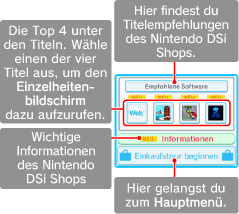
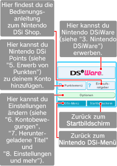

● Startbildschirm
Hier findest du empfohlene Software und wichtige Informationen.

● Hauptmenü
Berühre hier die Schaltflächen, um exklusive Nintendo DSi-Software (Nintendo DSiWare) zu erwerben, deinem Konto Punkte hinzuzufügen oder die Einstellungen für den Nintendo DSi Shop zu ändern.
